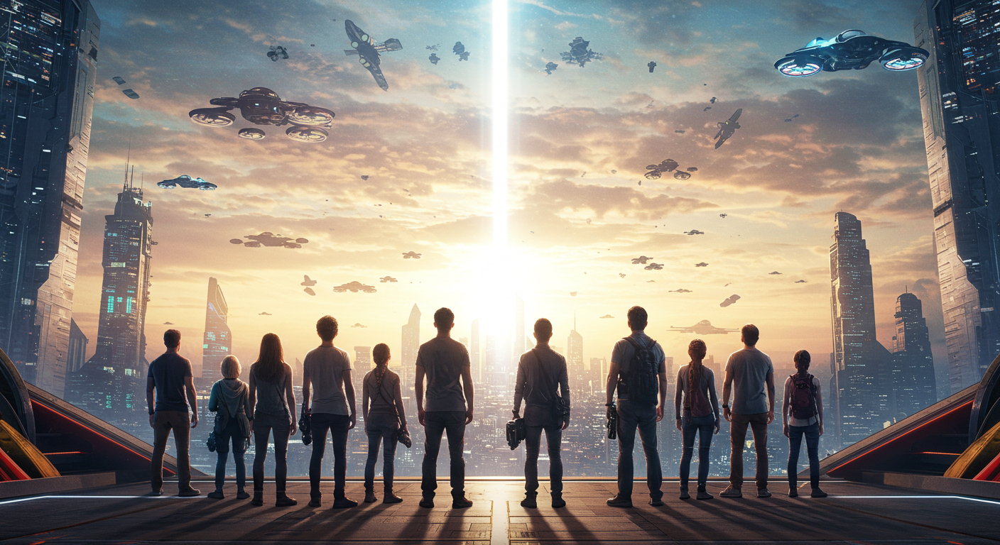

지속가능경영
환경과 사회, 그리고 미래를 위한 책임 있는 기술
Our Philosophy
지속가능한 미래를 위한 약속
LS TECH는 친환경 경영과 윤리경영을 바탕으로, 환경 보호와 사회적 책임을 실천합니다. 모든 비즈니스 과정에서 투명성과 공정성을 지키며, 미래 세대를 위한 지속가능한 기술 혁신에 앞장서고 있습니다.

Core Values

환경보호
지속가능한 지구를 위한 친환경 경영 실천

사회적 책임
모두를 위한 공정하고 투명한 기업 활동

지속가능한 기술혁신
미래를 위한 혁신적 기술 개발과 실천
Case Studies

사회 공헌
지역사회와 함께하는 다양한 사회공헌 활동을 통해 사회적 가치를 실현합니다.